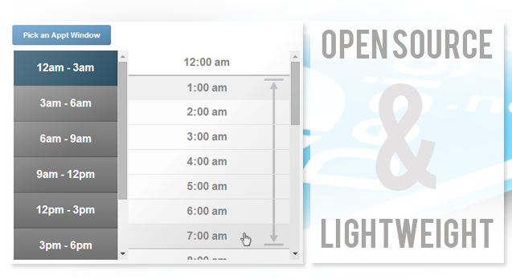

A brand new, lightweight, JavaScript plugin for picking time ranges in the browser.
Check out the Code & Documentation on my Github page.
Customizeable, lightweight, and unique.
apptPicker can be embedded directly into the DOM with HTML:
OR apptPickers can be created at any time (after DOM load) with JavaScript
var apptPicker = apptPicker('targetDivId').create({
start: '6:00am',
end: '6:00pm',
interval: 15,
subinterval: 120
});
apptPicker comes with an extensible API including 'on', 'toggleOpen', and 'getTimes':
var apptPicker = apptPicker('targetDivId').on('change',function(times){
console.log(times);
});